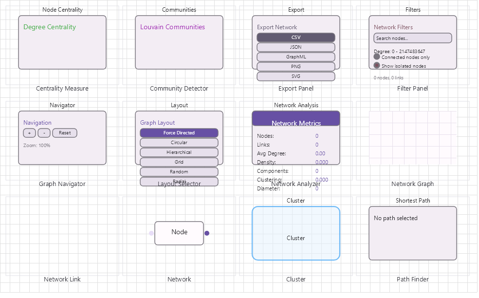

Network Graph Visualization Family
Network graph analysis and visualization with 12 components including node clustering, path finding, centrality measures, community detection, and graph navigation.

Overview
Base Control: NetworkControl : MaterialControl
Namespace: Beep.Skia.Network
The NetworkControl is the root control for this diagram family. It inherits MaterialControl and provides shared port management, styling, and template methods for all nodes in the family.
This family contains 12 node types.
Node Types
| Node Class | Shape | Description |
|---|---|---|
NetworkNode | Circle with label | Graph node/vertex with position, size, color, and label. |
NetworkLink | Line with weight | Weighted edge between two nodes. Supports directed/undirected. |
NetworkGraph | N/A (data structure) | Graph data structure: adjacency list, node/link management, serialization. |
PathFinder | N/A (algorithm) | Shortest path algorithms: Dijkstra, A*, Floyd-Warshall. |
CentralityMeasure | N/A (algorithm) | Node centrality: degree, betweenness, closeness, eigenvector, PageRank. |
CommunityDetector | N/A (algorithm) | Community detection: Louvain, label propagation, Girvan-Newman. |
GraphNavigator | N/A (interaction) | Graph exploration controls: zoom, pan, focus/unfocus, expand/collapse. |
LayoutSelector | N/A (UI) | Layout algorithm picker: force-directed, circular, hierarchical, grid, radial. |
FilterPanel | N/A (UI) | Node/link filtering by attributes, degree threshold, community membership. |
ExportPanel | N/A (UI) | Export graph as PNG, SVG, JSON, GEXF, GraphML. |
NodeCluster | Group/hull | Visual cluster grouping of related nodes with convex hull or bounding box. |
NetworkAnalyzer | N/A (algorithm) | Graph statistics: density, diameter, clustering coefficient, modularity. |
NetworkNode
Graph node/vertex with position, size, color, and label.
| Shape | Circle with label |
|---|---|
| Input Ports | Flexible |
| Output Ports | Flexible |
NetworkLink
Weighted edge between two nodes. Supports directed/undirected.
| Shape | Line with weight |
|---|---|
| Input Ports | 0 |
| Output Ports | 0 |
NetworkGraph
Graph data structure: adjacency list, node/link management, serialization.
| Shape | N/A (data structure) |
|---|---|
| Input Ports | 0 |
| Output Ports | 0 |
PathFinder
Shortest path algorithms: Dijkstra, A*, Floyd-Warshall.
| Shape | N/A (algorithm) |
|---|---|
| Input Ports | 0 |
| Output Ports | 0 |
CentralityMeasure
Node centrality: degree, betweenness, closeness, eigenvector, PageRank.
| Shape | N/A (algorithm) |
|---|---|
| Input Ports | 0 |
| Output Ports | 0 |
CommunityDetector
Community detection: Louvain, label propagation, Girvan-Newman.
| Shape | N/A (algorithm) |
|---|---|
| Input Ports | 0 |
| Output Ports | 0 |
LayoutSelector
Layout algorithm picker: force-directed, circular, hierarchical, grid, radial.
| Shape | N/A (UI) |
|---|---|
| Input Ports | 0 |
| Output Ports | 0 |
FilterPanel
Node/link filtering by attributes, degree threshold, community membership.
| Shape | N/A (UI) |
|---|---|
| Input Ports | 0 |
| Output Ports | 0 |
ExportPanel
Export graph as PNG, SVG, JSON, GEXF, GraphML.
| Shape | N/A (UI) |
|---|---|
| Input Ports | 0 |
| Output Ports | 0 |
NodeCluster
Visual cluster grouping of related nodes with convex hull or bounding box.
| Shape | Group/hull |
|---|---|
| Input Ports | 0 |
| Output Ports | 0 |
NetworkAnalyzer
Graph statistics: density, diameter, clustering coefficient, modularity.
| Shape | N/A (algorithm) |
|---|---|
| Input Ports | 0 |
| Output Ports | 0 |
Connection Points
Every node in this family exposes connection points (ports) for linking to other nodes. Port positions are computed lazily by LayoutPorts(), which runs when MarkPortsDirty() flags the layout as stale after a move or resize.
| Node Class | Input Ports | Output Ports | Extra |
|---|---|---|---|
NetworkNode | Flexible | Flexible | — |
NetworkLink | 0 | 0 | — |
NetworkGraph | 0 | 0 | — |
PathFinder | 0 | 0 | — |
CentralityMeasure | 0 | 0 | — |
CommunityDetector | 0 | 0 | — |
GraphNavigator | 0 | 0 | — |
LayoutSelector | 0 | 0 | — |
FilterPanel | 0 | 0 | — |
ExportPanel | 0 | 0 | — |
NodeCluster | 0 | 0 | — |
NetworkAnalyzer | 0 | 0 | — |
Connection Conventions
When building diagrams with this family, follow these conventions:
- NetworkGraph is the primary data model; NetworkNode/NetworkLink are visual
- Layout algorithms rearrange nodes to minimize edge crossings
- Analysis components operate on the graph structure, not the visual layer
Usage Example
Complete example showing creation, node placement, and connection:
C# Example
var net = new NetworkControl
{
X = 50, Y = 50,
Width = 700, Height = 500
};
drawingManager.AddComponent(net);
var graph = new NetworkGraph();
var n1 = graph.AddComponent("A", x: 100, y: 100);
var n2 = graph.AddComponent("B", x: 250, y: 80);
var n3 = graph.AddComponent("C", x: 250, y: 180);
graph.AddLink(n1, n2, weight: 1.5);
graph.AddLink(n1, n3, weight: 2.0);
graph.AddLink(n2, n3, weight: 0.8);
var finder = new PathFinder(graph);
var path = finder.FindShortestPath(n1, n3);
var centrality = new CentralityMeasure(graph);
var scores = centrality.CalculateBetweenness();